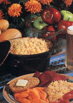

Most every summer, when canning season rolled around, my grandfather could be heard to comment, "Pickles ain't my favorite food, but what else can you do with cucumbers?"
Those words of his came vividly to mind last summer when, as a result of overenthusiastic planting, my wife and I were faced, not with an abundance of cukes, but with a hundred heads of cabbage!
"Coleslaw?" I mused, as we contemplated the small mountain of red and green leafy heads.
"No, sauerkraut!" she replied.
Well, I thought we'd bettered Granddad's solution to the cucumber problem nicely. Though coleslaw certainly "ain't my favorite food," kraut is, to my mind, a preeminent edible. Furthermore, it's not only tasty but also very nutritious. In fact, sauerkraut actually contains more vitamin C than the cabbage it's made from.
Many folks claim kraut serves as a blood cleanser and a bowel regulator. In addition, it's a predigested food: The starches in the cabbage are converted, during the krautmaking process, into simple sugars that are easily assimilated by the body. The bacteria (lactobacillus) that are responsible for the transformation will, like those in yogurt or other cultured foods, take up residence in your intestinal tract and help your body manufacture its own B vitamins.
Yep, nutritionally speaking, sauerkraut has a lot going for it . . . and only one real drawback-salt.
More and more health-conscious people are reducing the amount of salt in their diets, and I was hesitant to prepare a big batch of normal, salty sauerkraut, since I knew excess sodium can aggravate such conditions as high blood pressure and kidney problems.
"So, let's make saltless kraut," said my wife.
Saltless sauerkraut? Well, we certainly had enough cabbage to experiment with, so we took a stab at it. And we were pleasantly surprised; we made delicious, salt-free sauerkraut . . . and it was so good that I'd like to share the recipe with you here.
You'll need the following:
1 bushel of red, green, or mixed cabbages (this will make a big batch of kraut . . . you might want to try making a few two- or three-head batches, perhaps with different herb and spice mixtures, before you go whole hog)
any spices, herbs, or vegetables you wish to add (peppers, cukes, beets, carrots, and cauliflower are popular choices)
1 five-gallon earthenware crock
a plate or heavy pot lid that fits inside the crock
a baseball bat
Step One:
Thoroughly clean the crock, plate, and bat, as well as the cabbage and other vegetables. Set aside some of the large outer cabbage leaves. (In the directions that follow, treat any additional vegetables in the same manner as the cabbage.)
Step Two:
Cut or shred the cabbage into fine strips.
Step Three:
Put about a two-inch layer of shredded cabbage in the crock, and pound and press it with the bat until the cabbage is covered by its own juice.
Step Four:
Sprinkle your chosen herbs and spices over the cabbage, using a half teaspoon for each head. Dill, caraway seed, and thyme work well, and kelp or dulse, available in most natural foods stores, can be added to impart a salty taste.
Step Five:
Add a second layer of cabbage and pound as before, then add seasonings again. Continue the process until the crock is about threequarters full or until you run out of cabbage.
Step Six:
Place a few of the whole outer cabbage leaves on top and cover them with the plate or lid, which should be weighted down with a well-washed rock.
Step Seven:
Cover the crock with a clean cloth and place it in a cool place (60°-70°F). After a few days, a froth will appear on top of the liquid. Skim this off, remove the weight and lid, and wash them in hot water before replacing them. Repeat this step every few days.
Step Eight:
Depending upon your taste preference, it will take one to three weeks for the kraut to be ready. (Just try a sample each time you clean the lid and rock.) At that time, store the sauerkraut in sterile glass jars.
Step Nine:
Refrigerate the kraut. Without salt, fermentation will continue, so the sauerkraut will spoil if it's not refrigerated. It will, however, stay delicious under refrigeration for about three weeks.
EDITOR'S NOTE: When testing Mike's recipe, we found that there's less risk of spoilage if the kraut is allowed to "work" in an area that maintains a temperature of no more than 65°F.
|
 Kraut has long been a harvest favorite, and now you can make it even more healthful! |
|
|